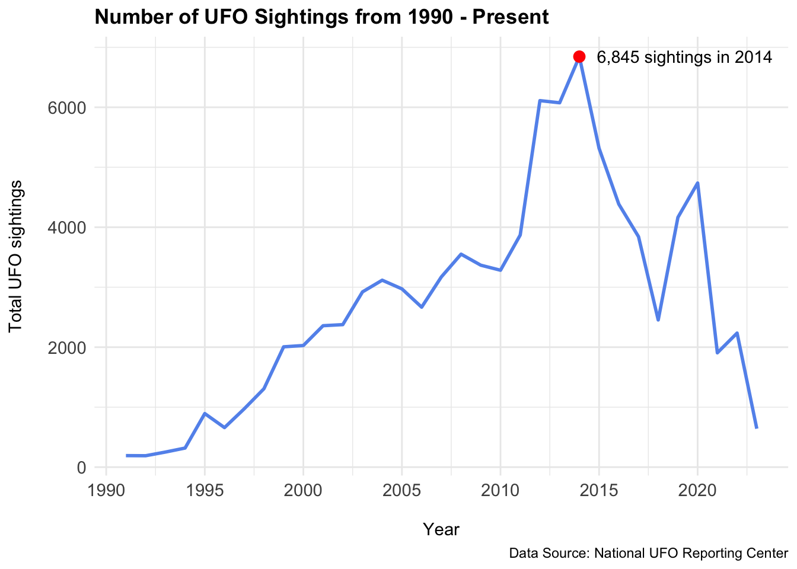
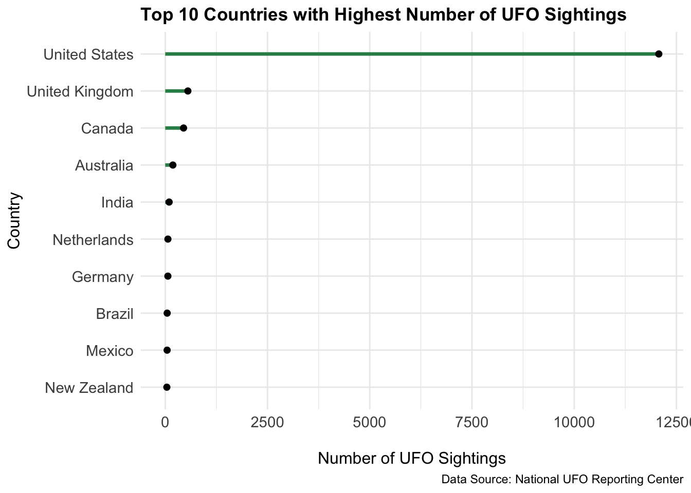
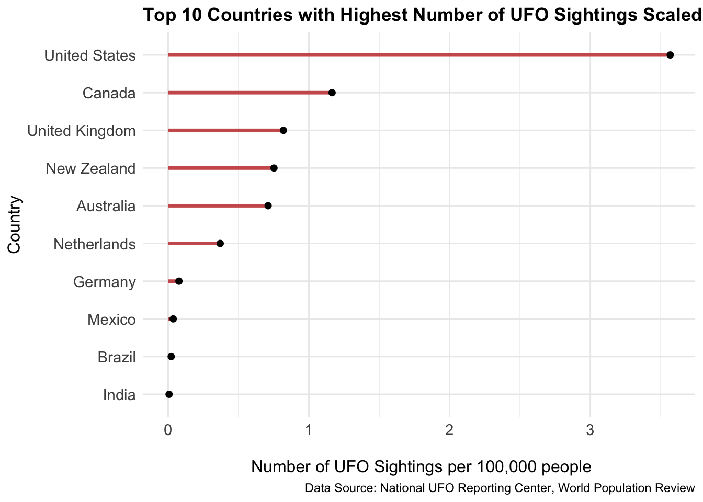
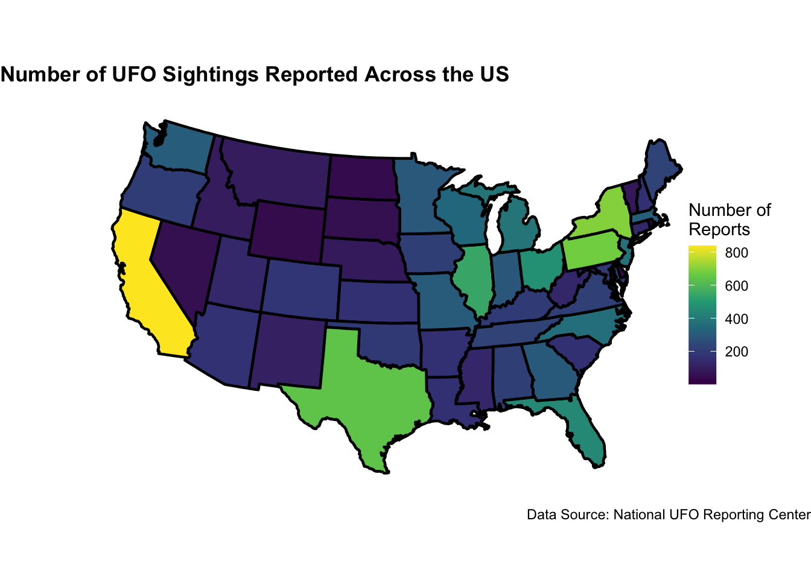

UFO Sightings Investigation
Introduction
Hello, welcome back! For this blog post, I worked with one of my friends, Hailey Quintavalle. We investigated a data set on UFO sightings reported throughout the world. A UFO is defined as an unidentified flying object. The data set is from Tidy Tuesday’s post on June 20, 2023 and it contains 96,429 observations that each represent a UFO sighting reported. The data set contains UFO sightings from 1925 all the way to 2023. Follow along as Hailey and I explore how the number of UFO sightings has changed over the past century and find out which countries have the most UFO sightings in them.
The variables I will be investigating are:
| variables | description |
|---|---|
| reported_date_time_utc | The time and date of the sighting, normalized to UTC |
| month | the month the sighting occurred in |
| year | the year the sighting occurred in |
| state | the state in the US that the sighting occurred in |
| country | the country the sighting occurred in |
Number of UFO Sightings from 1990 - Present
This line plot displays the total UFO sightings reported in the world from 1990 through 2023. The original data set that we had included UFO sightings from 1925 through 2023. However, Hailey and I decided to solely focus on the trend in the total number of UFO sightings from 1990 through 2023 because 1990 was the year that the UFO sightings started to drastically increase. We can see from the plot that there was a relatively increasing trend in the number of UFO sightings from 1990 to 2014. We see that 2014 had the highest number of UFO sightings reported at 6,845 sightings. It is interesting to note that after the peak number of sightings was reached in 2014, the number of sightings drastically decreased to less than 3000. There was a little increase in the UFO sightings reported in 2020, but ever since then the number of sightings reported have been declining. Do you think the number of sightings will continue to decrease in the future or will we see an increase again?
Top 10 Countries with Highest Number of UFO Sightings

This lollipop plot shows the top 10 countries in the world with the highest number of UFO sightings reported. It is not even close how far ahead the United States is compared to the other countries in the top 10. The United States have close to 12,500 UFO sighting reports, while the second closest country has not even 1,000 sightings.

This lollipop plot is similar to the one above but now takes into account the population of each of the countries in relation to the number of UFO sightings reported. The data is now scaled to represent the number of UFO sightings per 100,000 people in each of the countries. Hailey and I decided to scale the data because we could not differentiate between the points in the plot above as they were very close to one another. This plot still shows that the United States leads the world with the highest UFO sightings per 100,000 people at roughly 3.6. However, instead of the United Kingdom being in second, Canada is in second with roughly 1.3 UFO sightings per 100,000 people.
UFO Sightings Across US

This map of the United States depicts the number of UFO sightings reported state by state. The map excludes Hawaii and Alaska. We see that California has the highest number of UFO sighting reported at roughly 800. Texas, Pennsylvania and New York are close behind with roughly 600 sightings reported. On the other hand, Nevada, Wyoming, North Dakota, South Dakota and Vermont seem to have the lowest reported sightings at less than 200.